DeepXplore: Automated Whitebox Testing of Deep Learning Systems
This page was written by an AI model to give a high-level overview of the paper. Please check the paper for detail: ACM Digital Library.
Deep neural networks (DNNs) are now deployed in safety- and security-critical systems: self-driving cars, malware detectors, aircraft collision avoidance. In these settings, an incorrect decision on a rare corner-case input can be catastrophic, and the paper opens with two real incidents (a Google self-driving car hitting a bus, a Tesla autopilot failing to recognize a trailer) where the failing input was never part of the test set. The standard way DNNs are tested is to hold out part of a labeled dataset and measure accuracy on it, or, for self-driving systems, run largely unguided simulation. Neither approach examines what is actually happening inside the network, so neither can say how much of the network's logic the test set actually exercises.
Two threads of prior work try to go further. Adversarial example generation (for example the fast gradient sign method) perturbs an input just enough to flip a DNN's prediction, but by construction the perturbation must stay tiny and visually imperceptible, or a human has to check the result. The paper measures that adversarial inputs exercise only a small slice of a DNN's logic: 52.3% neuron coverage in their experiments, similar to randomly chosen inputs. Formal verification of DNN safety properties is the other thread, but the paper notes it does not scale to the large, real-world networks tested here. Both leave the core testing problem open: how to generate inputs that explore many different internal behaviors of a DNN, and how to tell when a produced input is wrong, without a human labeling every one.
DeepXplore's key idea has two parts. First, neuron coverage: the fraction of a DNN's neurons whose output exceeds an activation threshold for at least one test input, intended as the DNN analogue of code coverage. Second, differential testing as an oracle: instead of manually checking whether an output is correct, run several independently trained DNNs that solve the same task (for example three different self-driving models) on the same input; if they disagree, at least one of them is wrong, with no manual label needed. The paper then formulates finding inputs that are both diverse (maximize neuron coverage) and bug-revealing (maximize disagreement between the DNNs) as one joint optimization problem.
Because the DNNs under test are differentiable functions of their input, the paper solves this optimization with gradient ascent: starting from an unlabeled seed input, it iteratively nudges the input in the direction that increases disagreement between DNNs and activates previously inactive neurons, while a set of domain-specific constraints (pixel value ranges, only adding permissions to an Android manifest, and so on) keep the modified input realistic. The search stops as soon as the DNNs disagree, and the resulting input is added to the test set.
Across 15 state-of-the-art DNNs with a total of 132,057 neurons, trained on five datasets (MNIST, ImageNet, the Udacity driving dataset, Contagio/VirusTotal PDF malware, and Drebin Android malware) totaling around 162 GB of data, DeepXplore found thousands of erroneous behaviors per DNN. On average it generated one difference-inducing input per second on a single commodity laptop, achieved 34.4% and 33.2% higher neuron coverage than the same number of randomly chosen or adversarial inputs respectively, and retraining DNNs on its generated inputs improved classification accuracy by up to 3% compared to retraining on the same number of random or adversarial inputs.
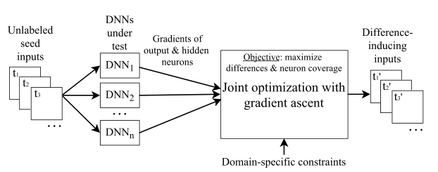
Key takeaways
- Neuron coverage is a new whitebox metric, the fraction of neurons activated above a threshold, built to play the role code coverage plays for traditional software.
- Differential testing across similar DNNs replaces manual labeling: disagreement between independently trained models is the error oracle.
- Generating diverse, bug-revealing inputs is cast as a joint optimization problem and solved efficiently with gradient ascent because DNNs are differentiable, unlike traditional programs.
- Domain-specific constraints (pixel ranges, lighting-only changes, occlusion rectangles, manifest-only edits) keep generated inputs physically and syntactically realistic.
- Across 15 DNNs over 5 datasets, DeepXplore found thousands of errors per model in about a second each on a laptop, beat random and adversarial testing on neuron coverage by roughly a third, and reused its outputs to improve accuracy by up to 3% and detect polluted training data.
From a DNN as a program to a gradient-guided test generator
Why code coverage does not fit DNNs, what neuron coverage measures, how differential testing removes the need for labels, and how the joint optimization is solved.
1 · A DNN, read as a program
A DNN is organized into layers of neurons; each neuron applies an activation function (sigmoid, tanh, or ReLU) to a weighted sum of its inputs and passes the result forward. Unlike a traditional program, a DNN has no explicit branches written by a programmer: its decision logic is learned from training data by adjusting connection weights, typically with backpropagation. The paper's analogy is that a neuron's influence on downstream neurons decreases as its output value falls, and drops to zero once the output hits zero, which plays a role similar to a branch not being taken.
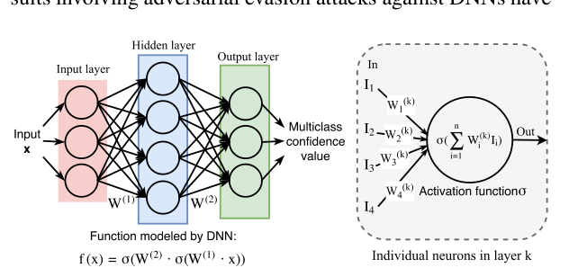
2 · Why existing DNN testing under-explores the model
Existing DNN testing splits a labeled dataset into train and test sets, or relies on unguided simulation, and measures only accuracy on whatever inputs happen to be in the test set. The paper's diagnosis: because DNN rules are learned, not written, a small, randomly drawn set of inputs can trigger the handful of rules needed to get the right traditional "code coverage" (every line of the surrounding Python code runs) while leaving most of the DNN's actual decision logic, in the sense of which neurons fire, untouched. Adversarial examples do explore some additional behavior, but they are restricted to tiny, humanly imperceptible perturbations, so they too only lightly exercise the model. Neither gives a way to tell whether a generated input is actually wrong without a human checking it.
3 · Neuron coverage: the metric
For a DNN with neuron set N and a test set T, let out(n, x) be neuron n's output on input x and t an activation threshold. Neuron coverage is the fraction of neurons in N whose output exceeds t for at least one x in T:
This is the DNN analogue of code coverage, but the paper shows it behaves very differently in practice: see the Evaluation tab for the measured gap between the two metrics.
4 · Differential testing as the oracle
To avoid manual labeling, DeepXplore runs several DNNs that perform the same task but were trained independently (different architectures, data splits, or hyperparameters) on the same input. If the DNNs disagree on the classification, at least one of them is wrong, which is enough to flag an error without knowing the ground truth. This is the same idea behind differential testing of traditional software (compared JVMs, C compilers, SSL/TLS validators), applied here to DNNs. The approach needs at least two DNNs for the same task and cannot catch a mistake that every tested DNN makes identically; the paper's Discussion section argues both conditions are usually met in practice, because developers commonly train several candidate models for the same problem.
5 · The joint optimization problem
Given n DNNs F1..n, a seed input x that all of them classify the same way as class c, and one of them chosen at random as Fj, DeepXplore maximizes
which pushes x toward being confidently classified as c by the other DNNs while driving down Fj's confidence in c, so Fj disagrees. Simultaneously, for a currently inactivated neuron n picked from a coverage tracker, DeepXplore maximizes
and combines both into a single objective, obj1(x) + λ2 · fn(x), maximized jointly. λ1 balances suppressing Fj's output against preserving the other DNNs' outputs; λ2 balances finding differences against covering new neurons. Both terms are differentiable, so the combined objective is too.
6 · Solving it with gradient ascent
DeepXplore computes the gradient of the joint objective with respect to the input x (not the weights, which is the key difference from the backpropagation used to train a DNN), then repeatedly updates x := x + s·grad, where s is a step size, until the DNNs disagree or a coverage target is reached. Because the search follows the gradient rather than taking a direct path, the resulting trajectory from seed to difference-inducing input is typically indirect.
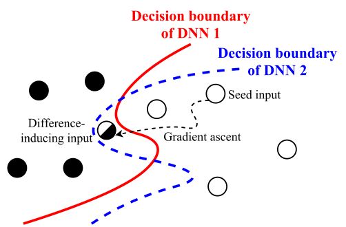
- Pick an unlabeled seed input x classified the same way, c, by all DNNs; randomly select one DNN, d, as the target to disagree.
- Pick one currently inactivated neuron (per DNN) from the coverage tracker.
- Compute obj1 (disagreement term) and obj2 (coverage term), combine into obj = obj1 + λ2·obj2, and take its gradient with respect to x.
- Apply domain-specific constraints to the gradient so the next update stays realistic (Section 7 below), then update x := x + s·grad.
- If d's prediction now differs from the rest, record x as a difference-inducing test, update the coverage tracker, and restart from a new seed; otherwise repeat steps 2 to 4.
- Stop once a desired neuron coverage is reached across all seeds.
7 · Domain-specific constraints
Raw gradient ascent can produce inputs that are not physically or syntactically valid, so DeepXplore constrains each update rather than relying only on the optimization objective (most such constraints do not fit cleanly as Lagrange-multiplier terms). For images (MNIST, ImageNet, Driving) it supports three constraint types: (1) lighting, shifting all pixels by the same amount (direction set by the sign of the gradient's mean) so only brightness changes; (2) occlusion by one small rectangle at an attacker-chosen position, simulating a blocked camera; (3) occlusion by multiple tiny rectangles, with the gradient zeroed wherever it would brighten a patch, simulating dirt on a lens. For Drebin (Android malware), only manifest-file features can change, and only additions (0 to 1) are allowed, never deletions, so application functionality and code are untouched; this is enforced by only applying gradient updates with a positive sign. For Contagio/VirusTotal (PDF malware), DeepXplore follows feature restrictions from prior work on evading PDF classifiers.
8 · Implementation
DeepXplore is implemented in about 7,086 lines of Python on top of TensorFlow 1.0.1 and Keras 2.0.3, with no modifications to either framework. It uses TensorFlow's support for exposing any intermediate neuron's output as a sub-DNN output to read neuron activations and compute gradients with respect to the original input. All experiments ran on a single Ubuntu 16.04 laptop (Intel i7-6700HQ, 4 cores, 16 GB RAM, NVIDIA GTX 1070 GPU). Results from this pipeline are covered in the Evaluation tab.
Evaluation
What DeepXplore was tested on, its headline tables, and what each one supports.
The authors test DeepXplore on 15 DNNs spanning five datasets and domains, comparing against random selection and adversarial example generation, and measure neuron coverage, number of difference-inducing inputs, runtime, retraining accuracy gains, and training-data pollution detection.
| What | Value in the paper |
|---|---|
| Platform | Single Ubuntu 16.04 laptop: Intel i7-6700HQ (4 cores, 2.60 GHz), 16 GB RAM, NVIDIA GTX 1070 GPU |
| Workloads | 15 DNNs (3 per dataset) on MNIST, ImageNet, Udacity Driving, Contagio/VirusTotal PDF malware, Drebin Android malware; 132,057 neurons total, about 162 GB of data |
| Baselines | Random selection from the test set; adversarial examples generated by the fast gradient sign method |
| Metrics | Neuron coverage vs. code coverage, number and diversity of difference-inducing inputs, runtime to first difference and to 100% neuron coverage, post-retraining accuracy, pollution-detection accuracy |
The 15 tested DNNs span three orders of magnitude in size
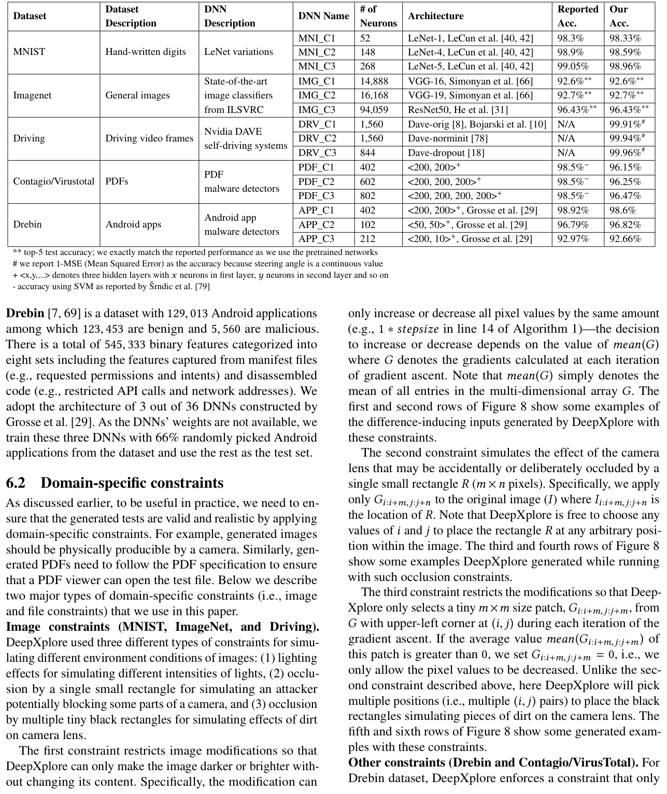
What it shows. For each dataset, the table lists three DNN architectures with their neuron counts and reported vs. measured accuracy. Neuron counts range from 52 (MNI_C1, LeNet-1) to 94,059 (IMG_C3, ResNet50). The authors' own accuracy closely matches previously reported accuracy for every model (for example 92.6% top-5 for VGG-16, 96.43% for ResNet50, within about 0.3 to 0.9 percentage points of reported figures for the MNIST, PDF, and Android models).
What to take from it. DeepXplore is tested on real, previously published or independently retrained models, not toy networks built for the paper, which supports the claim that its results generalize to deployed-quality DNNs.
DeepXplore finds thousands of difference-inducing inputs per DNN from 2,000 seeds
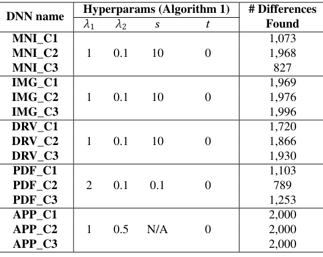
What it shows. Starting from 2,000 randomly selected seeds per DNN and the hyperparameters listed in the table, the count of difference-inducing inputs found ranges from 789 (PDF_C2) to a ceiling of 2,000 (all three Drebin/Android DNNs, APP_C1 to APP_C3). Most DNNs land between about 1,700 and 2,000.
What to take from it. Difference-inducing behavior is not rare for these models; it is the typical outcome for most seeds. The three Android malware DNNs hit the seed-count ceiling (2,000 out of 2,000), suggesting differences there are especially easy to find; the paper also reports distinct, lower hyperparameter settings were needed for PDF and Android models, indicating some tuning per domain.
10 random inputs reach 100% code coverage but under 34% neuron coverage
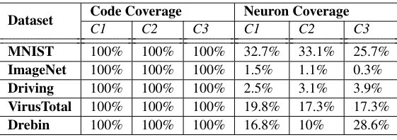
What it shows. For 10 randomly picked test inputs per DNN, code coverage (lines of the surrounding Python exercised) is 100% for every one of the 15 DNNs. Neuron coverage over the same inputs (threshold 0.75) ranges from 0.3% (IMG_C3, ResNet50) to 33.1% (MNI_C2). The paper separately notes that even the full MNIST test set (10,000 inputs) only reaches 57.7% to 83.6% neuron coverage across the three MNIST DNNs, while the full Contagio/VirusTotal test set reaches 100%.
What to take from it. Code coverage is saturated almost immediately and tells the tester nothing about how much of a DNN's logic has been tested; neuron coverage varies widely by DNN and dataset and climbs much more slowly, which is the paper's core argument for treating it as a meaningfully different, and more informative, metric.
Optimizing for neuron coverage makes the generated differences more diverse
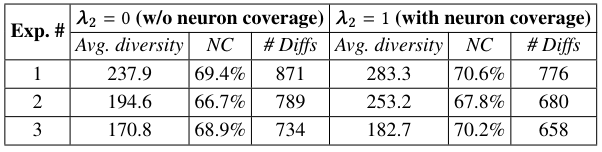
What it shows. Across three runs on 2,000 MNIST seeds, turning on the coverage term (λ2 = 1) versus off (λ2 = 0) raises average L1-distance diversity between generated difference-inducing inputs and their seeds in all three runs (for example 237.9 to 283.3 in run 1), alongside a small rise in neuron coverage (for example 69.4% to 70.6%), while the raw count of difference-inducing inputs found drops (for example 871 to 776).
What to take from it. Small absolute gains in neuron coverage correspond to meaningfully more diverse test inputs, and the trade-off is real: optimizing purely for the number of differences can yield many near-duplicate inputs sharing one root cause, while adding the coverage term trades some raw count for diversity.
Inputs from different classes activate substantially different neurons
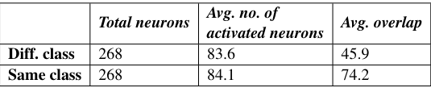
What it shows. For 100 same-class and 100 different-class pairs of MNIST inputs run through LeNet-5 (268 neurons total), pairs from different classes activate about 83.6 neurons on average with an average overlap of only 45.9, while same-class pairs activate about 84.1 neurons on average with a much higher average overlap of 74.2.
What to take from it. Similar numbers of neurons fire regardless of class, but which neurons fire differs sharply by class, supporting the paper's premise that distinct neurons tend to encode distinct rules, and that neuron coverage therefore reflects how many different rules a test set has exercised.
Reaching 100% neuron coverage takes seconds to a few minutes, with few seeds
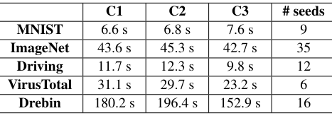
What it shows. Averaged over 10 runs, DeepXplore reaches 100% neuron coverage (excluding fully-connected layers, which the paper notes are hard to saturate) in 6.6 to 7.6 s for MNIST using 9 seeds, 42.7 to 45.3 s for ImageNet using 35 seeds, 9.8 to 12.3 s for Driving using 12 seeds, 23.2 to 31.1 s for VirusTotal using 6 seeds, and 152.9 to 196.4 s for Drebin using 16 seeds.
What to take from it. Full coverage is reachable from a small handful of seeds (6 to 35) in well under a minute for four of the five datasets; Drebin is the outlier, taking over two minutes, which the paper attributes to the difficulty of satisfying its add-only manifest-feature constraint while still activating every neuron.
The best step size for fast convergence is dataset-specific
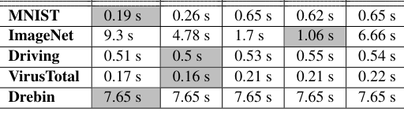
What it shows. Measuring time to the first difference-inducing input across five step sizes (s = 0.01, 0.1, 1, 10, 100, averaged over 10 runs), the fastest setting differs by dataset: MNIST is fastest at s = 0.01 (0.19 s), ImageNet at s = 10 (1.06 s), Driving and VirusTotal both at s = 0.1 (0.5 s and 0.16 s respectively), while Drebin's runtime stays flat at 7.65 s regardless of s.
What to take from it. There is no single globally optimal step size; it must be tuned per dataset, and the paper reports similar dataset-dependence for λ1 (Table 10) and a roughly consistent λ2 = 0.5 optimum across datasets (Table 11). Drebin's flat runtime across step sizes is consistent with its discrete, add-only feature updates being insensitive to the gradient's magnitude, though the paper does not spell this out explicitly (inference).
The more similar two DNNs are, the harder DeepXplore has to work to find a disagreement
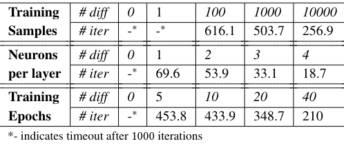
What it shows. Starting from a LeNet-1 trained on 60,000 MNIST samples for 10 epochs as a control, the authors vary training-sample count, filters per convolutional layer, or training epochs to create progressively more different variants, and measure average iterations (over 100 seeds) to the first difference-inducing input. Iterations fall as the variants diverge more: for example, varying training epochs, the gap shrinks from 453.8 iterations at a 5-epoch difference down to 210 iterations at a 40-epoch difference; varying filters per layer, from 69.6 iterations at a 1-filter difference down to 18.7 at a 4-filter difference.
What to take from it. DeepXplore can still find differences between DNNs that vary only slightly, it just takes more iterations. The paper reports that search failed to find any difference within 1,000 iterations in only one case among the meaningful comparisons tested; comparisons where the two DNNs have zero difference (compared against itself) also time out, but trivially, since no difference exists to find (inference).
FAQ
Q·What is DeepXplore, in one sentence?▾
A whitebox testing framework that generates inputs maximizing both neuron coverage and disagreement between several similarly-trained DNNs, using gradient ascent, so it can find erroneous DNN behavior without any manually labeled data.
Q·How is this different from generating adversarial examples?▾
Adversarial example generation (such as the fast gradient sign method) perturbs an input just enough to flip a prediction while staying visually imperceptible, which the paper measures as covering only about 52.3% of a DNN's neurons on average, similar to random inputs. DeepXplore instead allows larger, domain-constrained but visibly meaningful changes (lighting, occlusion, added manifest permissions) and explicitly optimizes for neuron coverage, so it explores more of the model's logic and does not need the change to be invisible.
Q·Why isn't code coverage enough for testing a DNN?▾
A DNN's decision rules are learned from data rather than written as branches in the surrounding code, so almost any input exercises all the same lines of Python. The paper measured 100% code coverage from just 10 random inputs on every tested DNN, while neuron coverage for the same inputs stayed under 34%. Neuron coverage tracks which internal rules, in the sense of activated neurons, were actually exercised.
Q·How does DeepXplore know an input is wrong without a human checking it?▾
It runs several independently trained DNNs that solve the same task on the same input. If they disagree, at least one of them made a mistake, which flags an error automatically. This is differential testing, borrowed from testing traditional software like JVMs and C compilers, applied here to DNNs.
Q·What does "gradient ascent" mean here, and how is it different from training a DNN?▾
DeepXplore computes the gradient of an objective (disagreement between DNNs plus activation of an uncovered neuron) with respect to the input pixels or features, treating the DNN's weights as fixed, and then updates the input to increase that objective. Training does the reverse: it holds the input fixed and updates the weights via backpropagation to reduce a loss. Both use the chain rule, but one moves the input and the other moves the weights.
Q·What stops DeepXplore from generating unrealistic garbage inputs?▾
Domain-specific constraints applied to the gradient before each update. For images this means only changing brightness uniformly, or occluding one rectangle, or occluding several tiny rectangles, never arbitrary pixel noise. For Android apps, only manifest features can change, and only by being added, never removed, so the app's code and functionality are preserved. For PDFs, feature changes follow restrictions from prior work on realistic PDF malware evasion.
Q·What if all the DNNs being compared make the same mistake?▾
DeepXplore cannot detect it, since differential testing only flags disagreement between models. The paper argues this is uncommon in practice because independently trained DNNs, with different architectures and data splits, rarely share the exact same error.
Q·What if the DNNs being compared are nearly identical?▾
It gets harder, and sometimes fails. The paper varied training data size, filters per layer, and training epochs to create pairs of LeNet-1 variants with controlled differences, and found that the number of iterations needed to find the first disagreement rises sharply as the DNNs converge; with real-world DNNs tested in the paper (which differ substantially), DeepXplore found differences efficiently in nearly every case.
Q·Can DeepXplore's output be used to make a DNN better, not just find its bugs?▾
Yes. The paper retrains DNNs by adding DeepXplore-generated inputs to the training set, using majority vote among the tested DNNs as an automatic label, and measures up to 3% higher accuracy than retraining on the same number of random or adversarial inputs. It also uses DeepXplore-generated inputs to flag likely mislabeled training samples, correctly identifying 95.6% of artificially polluted labels in one experiment.
Q·Does DeepXplore need to modify TensorFlow or Keras?▾
No. It is built entirely on top of them (about 7,086 lines of Python), using TensorFlow's existing support for exposing any intermediate neuron as a sub-model output to read activations and compute gradients with respect to the input.
Q·How fast is it in practice?▾
On average, about one second per difference-inducing input on a single commodity laptop with a GTX 1070 GPU. Reaching 100% neuron coverage for an entire DNN, from a handful of seeds, took well under a minute for MNIST, Driving, and VirusTotal in the paper's measurements, tens of seconds for ImageNet, and a few minutes for Drebin.
Q·Does higher neuron coverage automatically mean more bugs found?▾
Not directly; the paper treats coverage and the number of differences as two separate, sometimes competing objectives. Adding neuron coverage to the optimization goal increased the diversity of the differences found but reduced the raw count in their MNIST experiments, since without it DeepXplore tends to generate many near-duplicate differences sharing one underlying cause.
Q·What are the main limitations the authors acknowledge?▾
DeepXplore inherits differential testing's two limitations: it needs at least two DNNs for the same task, and it cannot catch an error every tested DNN makes identically. It also takes longer to find differences the more similar the compared DNNs are. The paper argues neither limitation is severe in practice, since multiple candidate DNNs are commonly trained for the same problem and real-world DNNs tend to differ enough to be distinguished quickly.